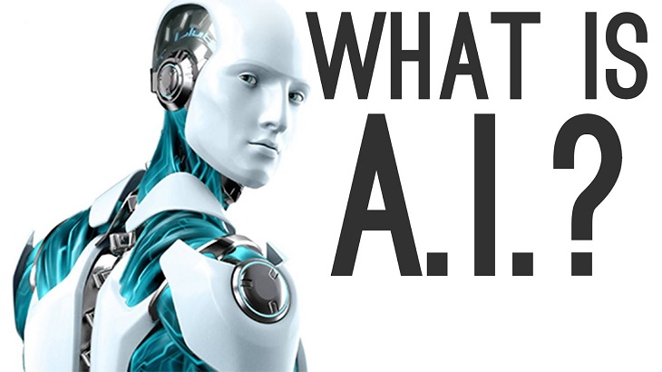

Trí tuệ nhân tạo là gì?
Trí tuệ nhân tạo (Artificial intelligence – viết tắt là AI) là một ngành thuộc lĩnh vực khoa học máy tính (Computer science). Là trí tuệ do con người lập trình tạo nên với mục tiêu giúp máy tính có thể tự động hóa các hành vi thông minh như con người.
Trí tuệ nhân tạo khác với việc lập trình logic trong các ngôn ngữ lập trình là ở việc ứng dụng các hệ thống học máy (machine learning) để mô phỏng trí tuệ của con người trong các xử lý mà con người làm tốt hơn máy tính
Cụ thể, trí tuệ nhân tạo giúp máy tính có được những trí tuệ của con người như: biết suy nghĩ và lập luận để giải quyết vấn đề, biết giao tiếp do hiểu ngôn ngữ, tiếng nói, biết học và tự thích nghi,…